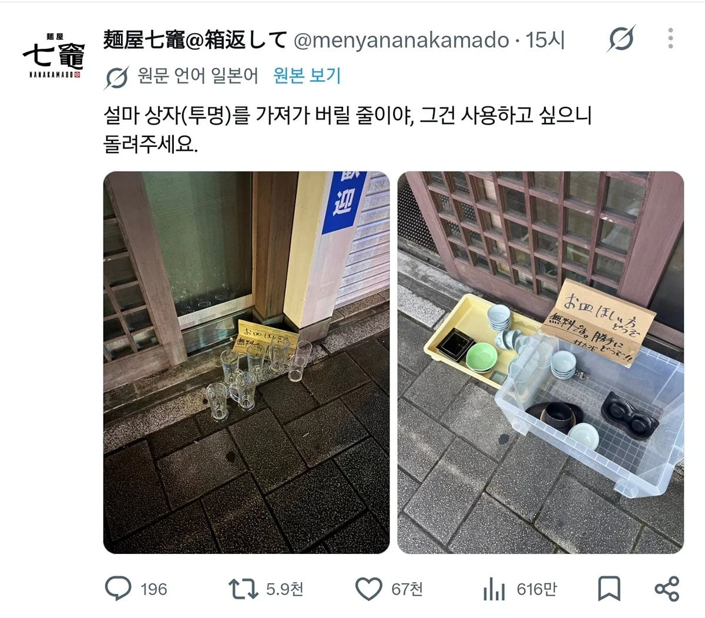
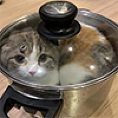

39 · 14 · 7 시간 전 · 원문

수집 당시 댓글 14개
ahalfsodaus · 12 시간 전
STHSTK · 12 시간 전
상자째 들고갔을듯
누르렁 · 11 시간 전
백퍼 야옹이짓임
↳ 답글 · 메카다나카 · 11 시간 전

↳ 답글 · 지하왕국 · 7 시간 전
관절에 딱 좋아!
구미리 · 10 시간 전
상자 있을때도 바닥에 덩그러니 있으니까 이상해ㅋㅋㅋㅋ
주식졷밥 · 10 시간 전
마! 가
SQ · 8 시간 전
ㅋㅋㅋㅋㅋ
챠메 · 8 시간 전
큰 그릇 ㅋㅋㅋㅋㅋ
왜용 · 8 시간 전
ㅋㅋㅋㅋㅋㅋㅋㅋㅋ
베레타38 · 8 시간 전
그릇의 정의를 아시오
BTS그래미수상 · 8 시간 전
일본 애들 음흉한 거는 진짜 알아줘야 됨
해양수산물 · 8 시간 전
그릇으로 쓸꺼에요!
↳ 답글 · 털국자 · 7 시간 전
돌려주세요
댓글
수집 당시 댓글 14개
ahalfsodaus · 12 시간 전
STHSTK · 12 시간 전
상자째 들고갔을듯
누르렁 · 11 시간 전
백퍼 야옹이짓임
· 메카다나카 · 11 시간 전

· 지하왕국 · 7 시간 전
관절에 딱 좋아!
구미리 · 10 시간 전
상자 있을때도 바닥에 덩그러니 있으니까 이상해ㅋㅋㅋㅋ
주식졷밥 · 10 시간 전
마! 가
SQ · 8 시간 전
ㅋㅋㅋㅋㅋ
챠메 · 8 시간 전
큰 그릇 ㅋㅋㅋㅋㅋ
왜용 · 8 시간 전
ㅋㅋㅋㅋㅋㅋㅋㅋㅋ
베레타38 · 8 시간 전
그릇의 정의를 아시오
BTS그래미수상 · 8 시간 전
일본 애들 음흉한 거는 진짜 알아줘야 됨
해양수산물 · 8 시간 전
그릇으로 쓸꺼에요!
· 털국자 · 7 시간 전
돌려주세요